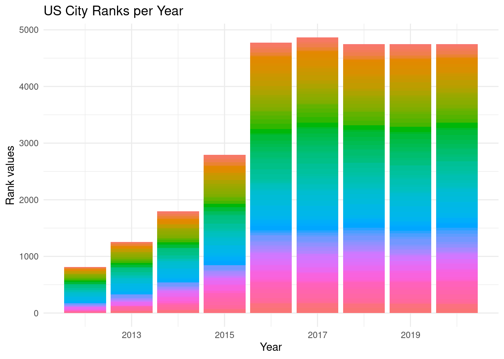
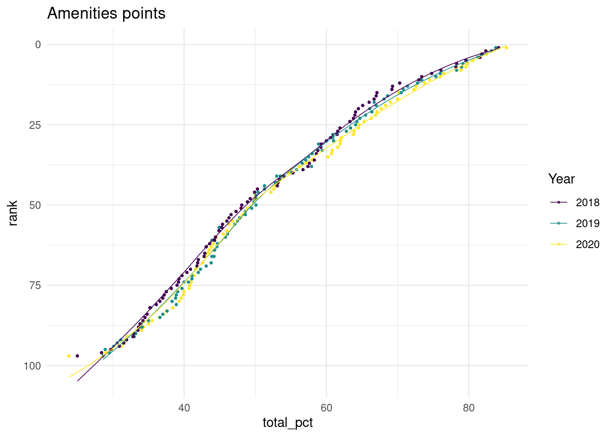
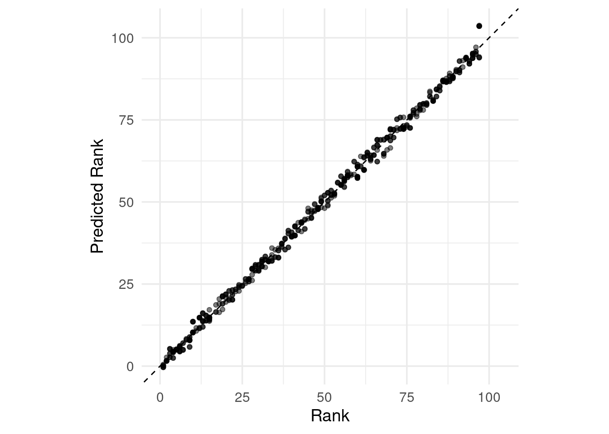
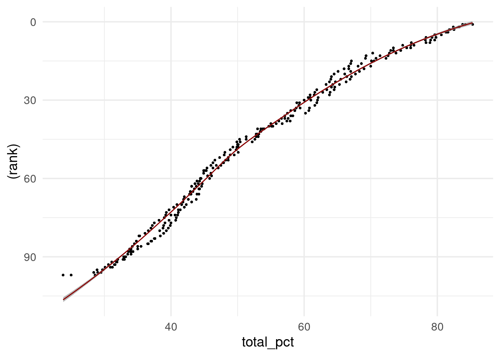
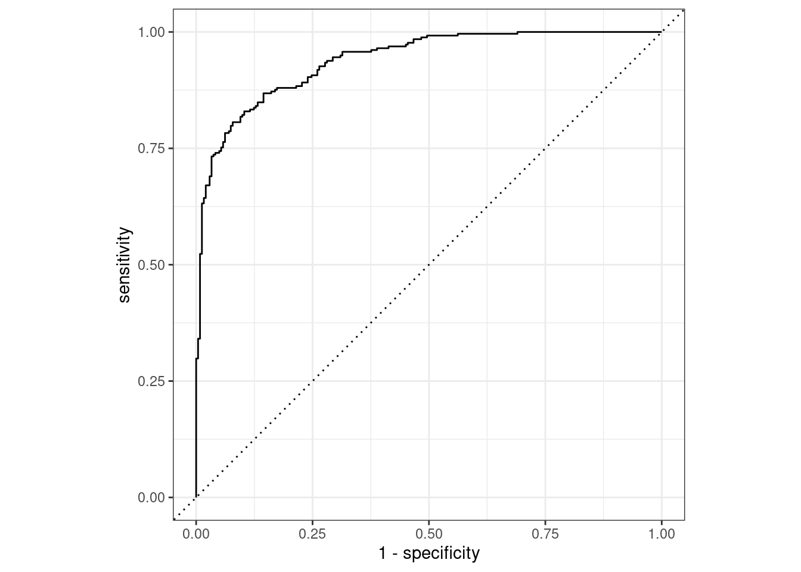

9.3 Functions used to measure predictive strengths of a model
The assessment of the models is via empirical validation and grouped by the nature of the outcome data, and this can be done through:
Regression:
- regression metrics (purely numeric)
Classification:
- binary classes
- multilevel metrics (three or more class levels)
9.3.1 Case Study 3
For this example data is from The Trust for Public Land for ranking the public parks in the US. The dataset ranges within a period between 2012 and 2020, in 102 US cities, parks are ranked by characteristics of services.
In particular we will be looking at selected amenities in the parks, which are things that conduce to comfort, convenience, or enjoyment.
https://github.com/rfordatascience/tidytuesday/blob/master/data/2021/2021-06-22/readme.md
Data load
library(tidytuesdayR)
tuesdata <- tidytuesdayR::tt_load(2021, week = 26)##
## Downloading file 1 of 1: `parks.csv`parks <- tuesdata$parks
parks%>%head## # A tibble: 6 × 28
## year rank city med_park_size_data med_park_size_points park_pct_city_data
## <dbl> <dbl> <chr> <dbl> <dbl> <chr>
## 1 2020 1 Minnea… 5.7 26 15%
## 2 2020 2 Washin… 1.4 5 24%
## 3 2020 3 St. Pa… 3.2 14 15%
## 4 2020 4 Arling… 2.4 10 11%
## 5 2020 5 Cincin… 4.4 20 14%
## 6 2020 6 Portla… 4.9 22 18%
## # ℹ 22 more variables: park_pct_city_points <dbl>, pct_near_park_data <chr>,
## # pct_near_park_points <dbl>, spend_per_resident_data <chr>,
## # spend_per_resident_points <dbl>, basketball_data <dbl>,
## # basketball_points <dbl>, dogpark_data <dbl>, dogpark_points <dbl>,
## # playground_data <dbl>, playground_points <dbl>, rec_sr_data <dbl>,
## # rec_sr_points <dbl>, restroom_data <dbl>, restroom_points <dbl>,
## # splashground_data <dbl>, splashground_points <dbl>, …parks%>%names## [1] "year" "rank"
## [3] "city" "med_park_size_data"
## [5] "med_park_size_points" "park_pct_city_data"
## [7] "park_pct_city_points" "pct_near_park_data"
## [9] "pct_near_park_points" "spend_per_resident_data"
## [11] "spend_per_resident_points" "basketball_data"
## [13] "basketball_points" "dogpark_data"
## [15] "dogpark_points" "playground_data"
## [17] "playground_points" "rec_sr_data"
## [19] "rec_sr_points" "restroom_data"
## [21] "restroom_points" "splashground_data"
## [23] "splashground_points" "amenities_points"
## [25] "total_points" "total_pct"
## [27] "city_dup" "park_benches"EDA: Exploratory data analysis
ggplot(parks,aes(x=year,y = rank))+
geom_col(aes(fill=city)) +
labs(x="Year", y = "Rank values")+
guides(fill="none")+
labs(title="US City Ranks per Year")+
theme_minimal()
Select three years 2018, 2019, and 2020 and 99 cities, with full information.
parks_long <- parks %>%
select(-amenities_points,-total_points,
-contains("_data"),
-park_benches,-city_dup)%>%
drop_na() %>%
pivot_longer(
cols = contains("_points"),
names_to = "amenities",
values_to = "points"
) %>%
mutate(amenities=gsub("_points","",amenities))
parks_long%>% head## # A tibble: 6 × 6
## year rank city total_pct amenities points
## <dbl> <dbl> <chr> <dbl> <chr> <dbl>
## 1 2020 1 Minneapolis 85.3 med_park_size 26
## 2 2020 1 Minneapolis 85.3 park_pct_city 38
## 3 2020 1 Minneapolis 85.3 pct_near_park 98
## 4 2020 1 Minneapolis 85.3 spend_per_resident 100
## 5 2020 1 Minneapolis 85.3 basketball 47
## 6 2020 1 Minneapolis 85.3 dogpark 65parks_long %>%
ggplot(aes(x = total_pct, y = rank, group=year,color=factor(year))) +
geom_point(size = 0.5,
alpha = 0.7) +
geom_smooth(aes(color=factor(year)),linewidth=0.3,se=F) +
scale_y_reverse()+
scale_color_viridis(discrete = TRUE) +
labs(title = "Amenities points",color="Year") +
theme_minimal()
Let’s pose some questions before to choose:
What are we going to predict?
What is our research question?
Data Split
set.seed(123)
parks_split <- initial_split(parks_long, strata=rank,prop = 0.80)
parks_train <- training(parks_split)
parks_test <- testing(parks_split)Preprocessing steps: recipe() %>% step_*.*
This step involves setting the model formula and eventually make some data preprocessing with the help of the step_*.* functions.
In this case we don’t make any extra manipulations, in the first step of our model.
parks_rec <-
recipe(
rank ~ ., data = parks_train
)Set the Workflow
Wrap everything into a workflow.
# set model engine
lm_model <- linear_reg() %>% set_engine("lm")
# use a workflow
lm_wflow <-
workflow() %>%
add_model(lm_model) %>%
add_recipe(parks_rec)Fit the workflow with the training set.
lm_fit <- fit(lm_wflow, parks_train)
lm_fit %>% tidy() %>% head## # A tibble: 6 × 5
## term estimate std.error statistic p.value
## <chr> <dbl> <dbl> <dbl> <dbl>
## 1 (Intercept) -2162. 88.0 -24.6 3.71e-118
## 2 year 1.14 0.0437 26.1 6.81e-131
## 3 cityAnaheim 1.62 0.477 3.39 7.06e- 4
## 4 cityAnchorage -1.08 0.438 -2.46 1.40e- 2
## 5 cityArlington, Texas 3.21 0.504 6.38 2.22e- 10
## 6 cityArlington, Virginia 9.39 0.621 15.1 2.53e- 49Predictwithnew datafrom thetesting set
# predict(lm_fit, parks_test %>% slice(1:3))
# test the model on new data
pred <- predict(lm_fit,
new_data = parks_test %>%
filter(city %in% c("Seattle","Atlanta","Baltimore")))parks_test_res <- predict(lm_fit,
new_data = parks_test %>% select(-rank)) %>%
bind_cols(parks_test %>% select(rank))
parks_test_res%>%head## # A tibble: 6 × 2
## .pred rank
## <dbl> <dbl>
## 1 0.0862 1
## 2 0.180 1
## 3 0.187 1
## 4 2.66 2
## 5 3.76 3
## 6 3.90 3ggplot(parks_test_res, aes(x = rank, y = .pred)) +
# Create a diagonal line:
geom_abline(lty = 2) +
geom_point(alpha = 0.5) +
labs(y = "Predicted Rank", x = "Rank") +
# Scale and size the x- and y-axis uniformly:
coord_obs_pred()
lm_fit%>%
augment(new_data = parks_test %>%
filter(city %in% c("Seattle","Atlanta","Baltimore")))%>%
group_by(city)%>%
reframe(rank=mean(rank),.pred=mean(.pred))## # A tibble: 3 × 3
## city rank .pred
## <chr> <dbl> <dbl>
## 1 Atlanta 41.2 41.9
## 2 Baltimore 60 60.0
## 3 Seattle 11 10.7ggplot() +
geom_point(data=parks_long,
aes(x = total_pct, y = (rank)),
color="grey0",
size = 0.5,
alpha = 0.7)+
scale_y_reverse()+
geom_smooth(data= lm_fit%>%
augment(new_data = parks_test),
aes(total_pct,.pred),
color="darkred",
size = 0.5,
alpha = 0.7)
- Apply the root mean squared error
rmse()
The first measure used for the model is the root mean squared error: RMSE
# rmse(data, truth = outcome, estimate = .pred)
rmse(parks_test_res, truth = rank, estimate = .pred)## # A tibble: 1 × 3
## .metric .estimator .estimate
## <chr> <chr> <dbl>
## 1 rmse standard 1.57Then make a comparison adding more metrics at once: Multiple metrics at once
# data_metrics <- metric_set(rmse, rsq, mae)
# data_metrics(data_test_res, truth = outcome, estimate = .pred)
parks_metrics <- metric_set(rmse, rsq, mae)
parks_metrics(parks_test_res, truth = rank, estimate = .pred)## # A tibble: 3 × 3
## .metric .estimator .estimate
## <chr> <chr> <dbl>
## 1 rmse standard 1.57
## 2 rsq standard 0.997
## 3 mae standard 1.21Here we use some examples from the book with a sample predictions and multiple resampling:
Binary classes
- Confusion matrix:
Confusion matrix gives a holistic view of the performance of your model
What is a Confusion Matrix?
It is a matrix that contains values such as:
- True Positive (TP)
- True Negative (TN)
- False Positive – Type 1 Error (FP)
- False Negative – Type 2 Error (FN)

Confusion matrix
Example 1: two_class_example
data("two_class_example")
conf_mat(two_class_example, truth = truth, estimate = predicted)## Truth
## Prediction Class1 Class2
## Class1 227 50
## Class2 31 192The confusion matrix contains other metrics that can be extracted under specific conditions.
- Precision is how certain you are of your true positives
- Recall is how certain you are that you are not missing any positives.
The measure used to estimate the effectiveness is the overall accuracy. It uses the hard class predictions to measure performance, which tells us whether our model is actually estimating a probability of cutoff to establish if the model predicted well or not with accuracy.
- Accuracy:
accuracy(two_class_example, truth = truth, estimate = predicted)## # A tibble: 1 × 3
## .metric .estimator .estimate
## <chr> <chr> <dbl>
## 1 accuracy binary 0.838- Matthews correlation coefficient:
mcc(two_class_example, truth, predicted)## # A tibble: 1 × 3
## .metric .estimator .estimate
## <chr> <chr> <dbl>
## 1 mcc binary 0.677- F1 metric: F1-score is a harmonic mean of Precision and Recall. The F1-score captures both the trends in a single value: when we try to increase the precision of our model, the recall (aka, sensitivity) goes down, and vice-versa.
f_meas(two_class_example, truth, predicted) #,event_level = "second")## # A tibble: 1 × 3
## .metric .estimator .estimate
## <chr> <chr> <dbl>
## 1 f_meas binary 0.849All of the above have the event_level argument (first/second level)
To visualize the model metrics behavior, the receiver operating characteristic (ROC) curve computes the sensitivity and specificity over a continuum of different event thresholds
- roc_curve() (curve)
- roc_auc() (area)
two_class_curve <- roc_curve(two_class_example, truth, Class1)
two_class_curve %>% head## # A tibble: 6 × 3
## .threshold specificity sensitivity
## <dbl> <dbl> <dbl>
## 1 -Inf 0 1
## 2 1.79e-7 0 1
## 3 4.50e-6 0.00413 1
## 4 5.81e-6 0.00826 1
## 5 5.92e-6 0.0124 1
## 6 1.22e-5 0.0165 1roc_auc(two_class_example, truth, Class1)## # A tibble: 1 × 3
## .metric .estimator .estimate
## <chr> <chr> <dbl>
## 1 roc_auc binary 0.939autoplot(two_class_curve)
Multi-class
Finally we see data with three or more classes
- Accuracy:
data(hpc_cv)
hpc_cv%>%head## obs pred VF F M L Resample
## 1 VF VF 0.9136340 0.07786694 0.008479147 1.991225e-05 Fold01
## 2 VF VF 0.9380672 0.05710623 0.004816447 1.011557e-05 Fold01
## 3 VF VF 0.9473710 0.04946767 0.003156287 4.999849e-06 Fold01
## 4 VF VF 0.9289077 0.06528949 0.005787179 1.564496e-05 Fold01
## 5 VF VF 0.9418764 0.05430830 0.003808013 7.294581e-06 Fold01
## 6 VF VF 0.9510978 0.04618223 0.002716177 3.841455e-06 Fold01hpc_cv%>%
accuracy(obs, pred)## # A tibble: 1 × 3
## .metric .estimator .estimate
## <chr> <chr> <dbl>
## 1 accuracy multiclass 0.709- Matthews correlation coefficient:
mcc(hpc_cv, obs, pred)## # A tibble: 1 × 3
## .metric .estimator .estimate
## <chr> <chr> <dbl>
## 1 mcc multiclass 0.515And then the sensitivity calculation for different estimators:
macro_sens <-sensitivity(hpc_cv, obs, pred, estimator = "macro");
weigh_sens <- sensitivity(hpc_cv, obs, pred, estimator = "macro_weighted");
micro_sens <- sensitivity(hpc_cv, obs, pred, estimator = "micro");
sens <- rbind(macro_sens,weigh_sens,micro_sens)
sens## # A tibble: 3 × 3
## .metric .estimator .estimate
## <chr> <chr> <dbl>
## 1 sensitivity macro 0.560
## 2 sensitivity macro_weighted 0.709
## 3 sensitivity micro 0.709And the ROC curve:
roc_auc(hpc_cv, obs, VF, F, M, L)## # A tibble: 1 × 3
## .metric .estimator .estimate
## <chr> <chr> <dbl>
## 1 roc_auc hand_till 0.829The ROC area:
roc_auc(hpc_cv, obs, VF, F, M, L, estimator = "macro_weighted")## # A tibble: 1 × 3
## .metric .estimator .estimate
## <chr> <chr> <dbl>
## 1 roc_auc macro_weighted 0.868The ROC visualization: https://www.tidymodels.org/start/resampling/
hpc_cv %>%
group_by(Resample) %>%
roc_curve(obs, VF, F, M, L) %>%
autoplot()
9.3.2 Conclusion
Judging the effectiveness of a variety of different models and to choose between them, we need to consider how well these models behave through the use of some performance statistics:
- the area under the Receiver Operating Characteristic (ROC) curve, and
- overall classification accuracy.
In conclusion when judging on a model effectiveness is important to follow few clear steps:
- check of the data used for the modeling if contains any of the hidden information, such as modification of the units
- second step is to calculate the ROC curve and the Area underneath the curve, plot it to see how it behaves on the model
- third is to apply some selected metrics such as RMSE or RSQ, MAE etc.. to evaluate the estimation values
- fourth make the confusion matrix as well as all the related metrics (sensitivity, specificity, accuracy, F1 …)
- finally apply again the ROC curve visualization on resampling to see the best fit
9.3.2.1 Resources
- yardstick: https://yardstick.tidymodels.org/
- recipes: https://www.tidymodels.org/start/recipes/
- ROC curve: https://www.analyticsvidhya.com/blog/2020/06/auc-roc-curve-machine-learning/?utm_source=linkedin&utm_medium=social&utm_campaign=old-blog&utm_content=B&custom=LDV150
- Decoding the confusion matrix: https://towardsdatascience.com/decoding-the-confusion-matrix-bb4801decbb